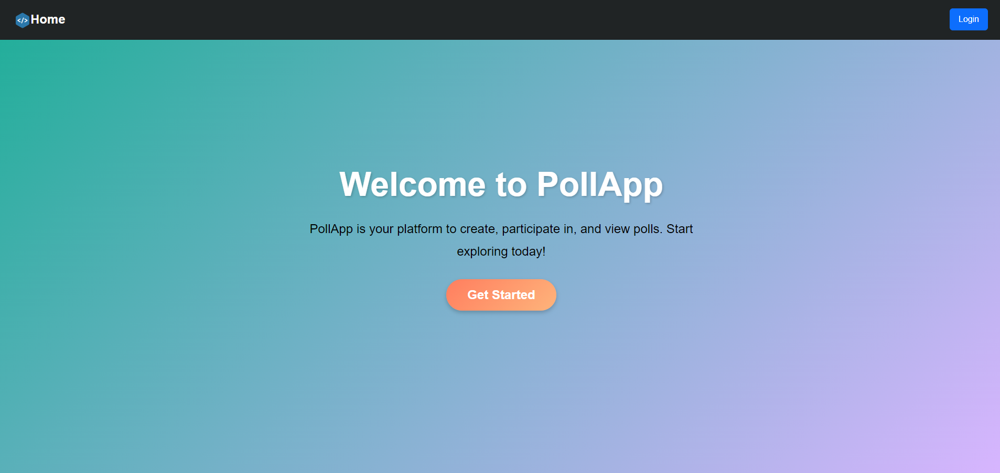
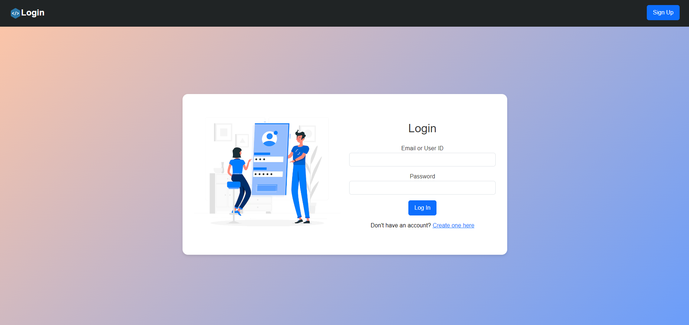
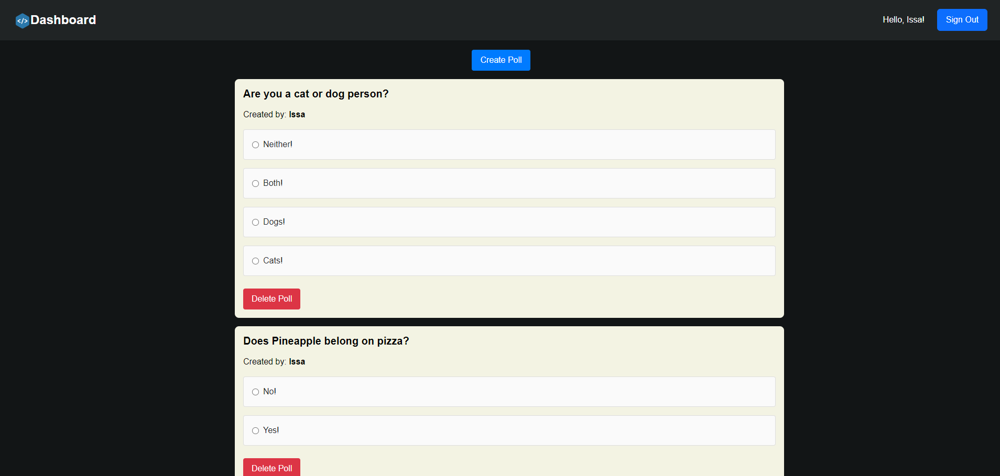
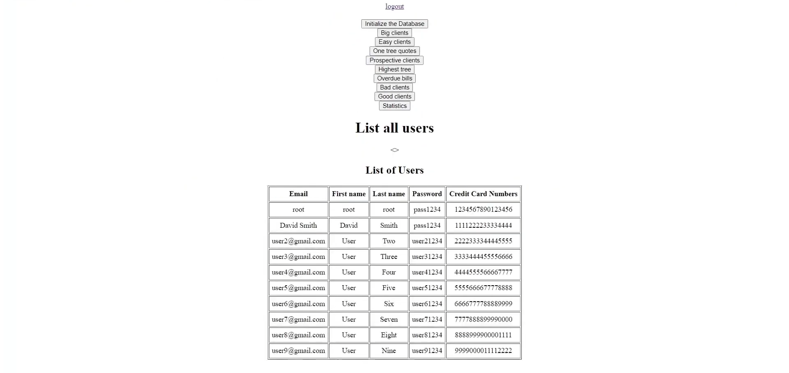
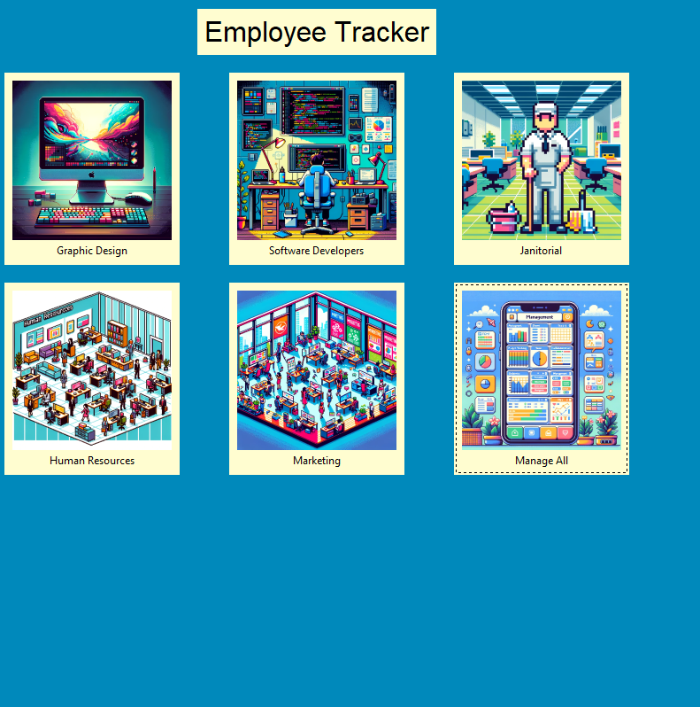
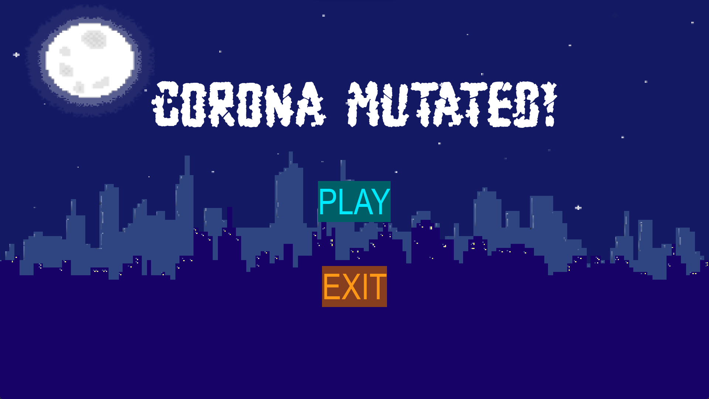

PollApp



PollApp is a unique social media platform centered around polls. Whether you want to create polls, vote on them, or view the results, PollApp has got you covered.
With PollApp, you can engage with friends, colleagues, or the wider community. Use it for fun, work, or simply to stay informed about various topics. Join us in making decisions more interactive and enjoyable!
Created using: Node.js, Express.js, React, MySQL, Bootstrap, HTML, CSS, Git, and Vite. Deployed using AWS EC2 and S3 buckets.

The Tree-Cutting Management Web Application is a powerful tool designed to optimize tree-cutting service management. It enables users to create accounts, log in, and navigate through a well-structured dashboard to manage clients, track overdue bills, and generate one-tree quotes.
The application also provides valuable statistics on client performance, helping the owner make informed business decisions. Users can efficiently manage tasks and improve client interactions, making tree-cutting management more organized and effective.

Employee tracker improved is a useful HR program that allows the client to load, save, delete, add, and search an employee to fulfill a company's needs.

My first ever project. This was an invidiual project and I created it using Python, Pygame's library. It is a simple 2D game that demonstrates fundamental programming concepts. The goal of the game is to escape your room (which is full of zombies), and drive away to a police station or an airport to escape on an air vehicle in time.